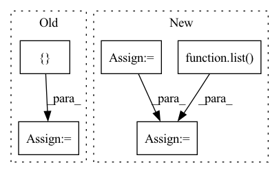

Pattern ID :2843
Before Change
def forward(self, x):
if self.training:
total_blocks = sum([len(sx) for sx in x])
mask_size = torch.Size([ total_blocks *= mask[mask_id]
mask_id += 1
return x, mask
return x, NoneAfter Change
def forward(self, X):
if self.training:
blocks_per_mod = [sx.shape[1] for sx in X]
mask_size = torch.Size([X[0].shape[0], sum(blocks_per_mod)])
binomial = torch.distributions.binomial.Binomial(probs=1 - self.p)
mask = binomial.sample(mask_size) * (1.0 / (1 - self.p))
mask_shapes = [list( x.shape[:2]) + [1] * (x.dim() - 2) for x in X]
grouped_masks = torch.split(mask, blocks_per_mod, dim=1)
grouped_masks = [m.reshape(s) for m, s in zip(grouped_masks, mask_shapes)]
X = [x * m for x, m in zip(X, grouped_masks)]
return X, grouped_masks
return X, None
In pattern: SUPERPATTERN
Frequency: 3
Non-data size: 5
Instances Fragment ID: 9439073
Project Name: anita-hu/msaf
Commit Name: a2c91bd6e186680ca2c41bbf22c9b57aff4654d2
Time: 2020-12-30
Author: anitahu113@gmail.com
File Name: MSAF.py
M Class Name: BlockDropout
N Class Name: BlockDropout
M Method Name: forward(2)
N Method Name: forward(2)
M Parent Class: nn.Module
N Parent Class: nn.Module
M File Name: MSAF.py
N File Name: MSAF.py
M Start Line: 40
M End Line: 49
N Start Line: 39
N End Line: 47
Before Change
def forward(self, x: List[torch.Tensor]) -> List[torch.Tensor]:
// top-down
tds = [ None = x[-1]
for i in range(self.num_levels - 2, -1, -1):
tds[i] = self.td_fuses[i](
[x[i], self.upsample(tds[i + 1])]
) // P6td = conv(P6in + resize(P7td))
// bottom-up
outs = [None] * self.num_levels
outs[0] = tds[0]
for i in range(self.num_levels - 2):
outs[i + 1] = self.out_fuses[i](
[x[i + 1], tds[i + 1], self.downsample(tds[i])]After Change
def forward(self, x: List[torch.Tensor]) -> List[torch.Tensor]:
// top-down, P6td = conv(P6in + resize(P7td))
tds = list( x) // make a copy
for i, td_fuse in enumerate(self.td_fuses):
tds[-2 - i] = td_fuse([x[-2 - i], self.upsample(tds[-1 - i])])
// bottom-up, P4in + P4td + resize(P3td)
outs = list(tds)
for i, out_fuse in enumerate(self.out_fuses):
outs[i + 1] = out_fuse([x[i + 1], tds[i + 1], self.downsample(tds[i])])
Fragment ID: 9439076
Project Name: gau-nernst/vision-toolbox
Commit Name: ccf583d8766c43835ae87b11093ac1485be46da8
Time: 2022-05-06
Author: gau.nernst@yahoo.com.sg
File Name: vision_toolbox/necks.py
M Class Name: BiFPNLayer
N Class Name: BiFPNLayer
M Method Name: forward(2)
N Method Name: forward(2)
M Parent Class: nn.Module
N Parent Class: nn.Module
M File Name: vision_toolbox/necks.py
N File Name: vision_toolbox/necks.py
M Start Line: 203
M End Line: 217
N Start Line: 198
N End Line: 208
Before Change
token_index: LongTensor
) -> Tuple[LongTensor, FloatTensor]:
image_count = encoder_state.shape[0] // 2
token_index_batched = token_index[[ 0After Change
image_count = encoder_state.shape[0] // 2
token_index_batched = token_index[None, :][list(range(image_count)) * 2]
if prev_tokens.ndim == 1:
prev_tokens = prev_tokens.unsqueeze(0)
prev_tokens = prev_tokens.T[list( range(image_count)) * 2]
prev_tokens.clamp_(0, self.image_vocab_count)
decoder_state = self.embed_tokens.forward(prev_tokens)
decoder_state += self.embed_positions.forward(token_index_batched) Fragment ID: 9439078
Project Name: kuprel/min-dalle
Commit Name: 674cd2ef60b250b352d50ecd658e4ce41967dbe8
Time: 2022-07-18
Author: nev@neverix.io
File Name: min_dalle/models/dalle_bart_decoder.py
M Class Name: DalleBartDecoder
N Class Name: DalleBartDecoder
M Method Name: forward(8)
N Method Name: forward(7)
M Parent Class: nn.Module
N Parent Class: nn.Module
M File Name: min_dalle/models/dalle_bart_decoder.py
N File Name: min_dalle/models/dalle_bart_decoder.py
M Start Line: 142
M End Line: 153
N Start Line: 148
N End Line: 186